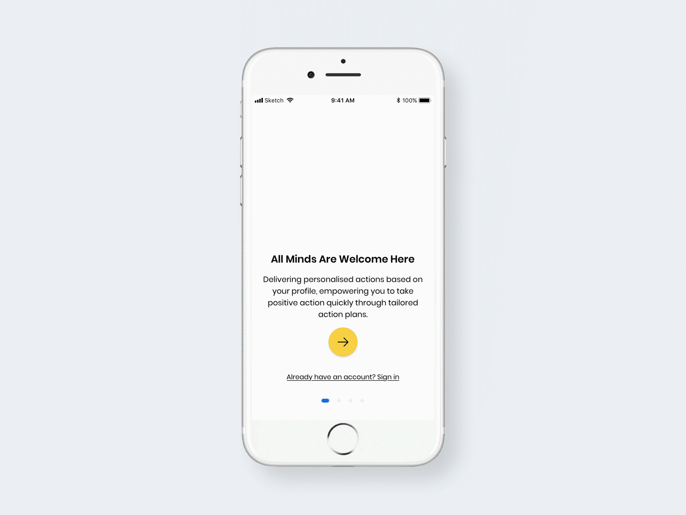
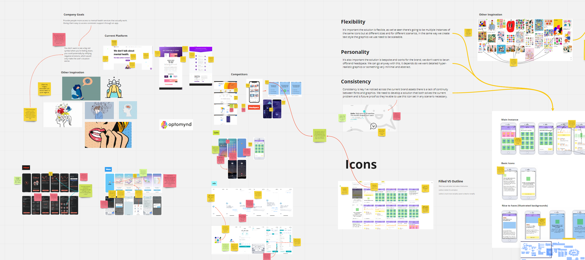
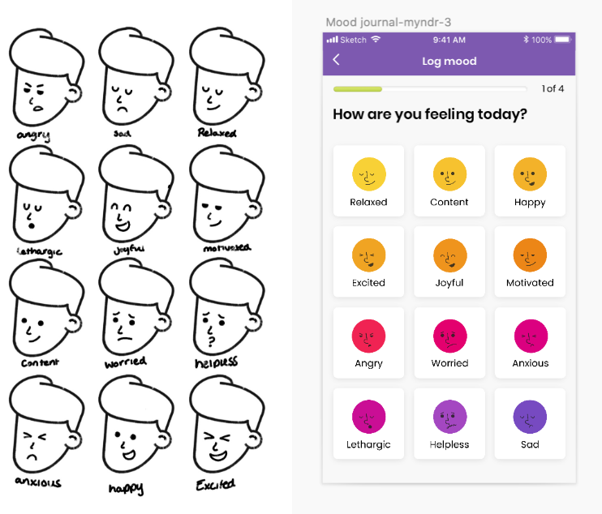
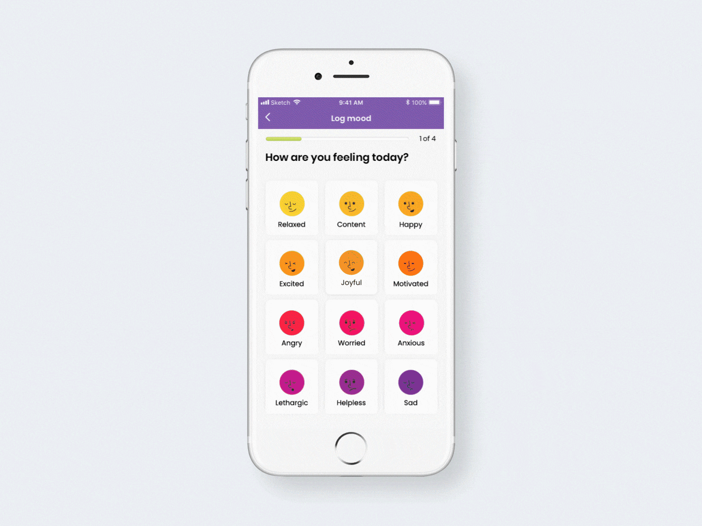
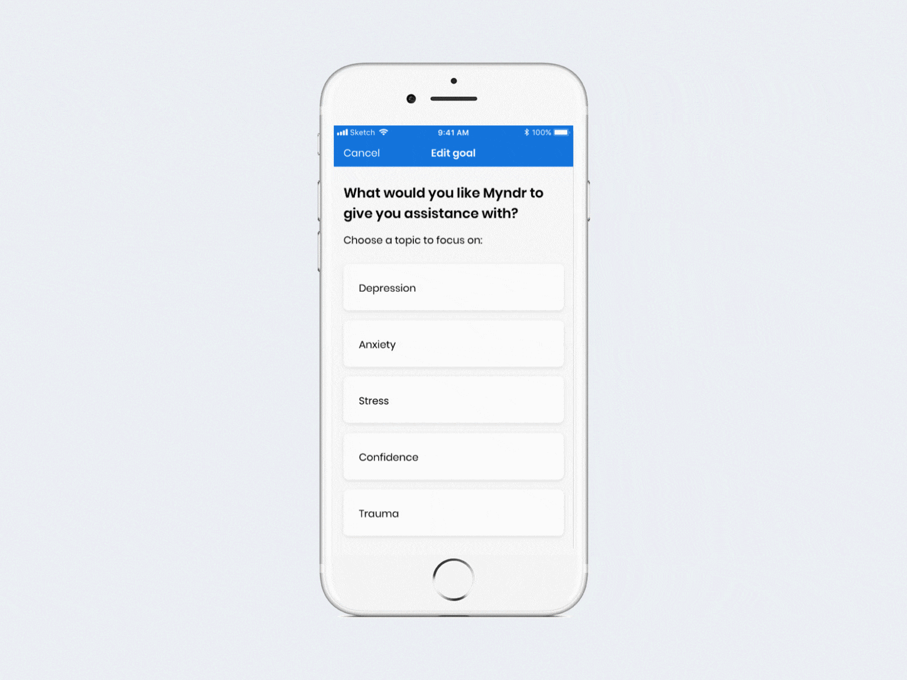
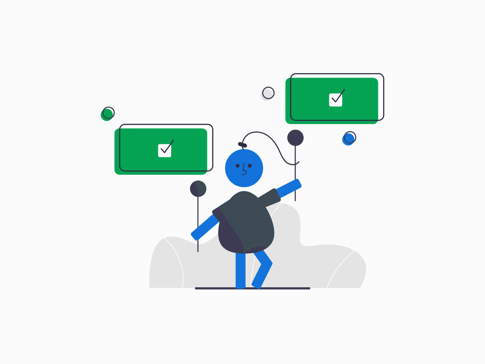
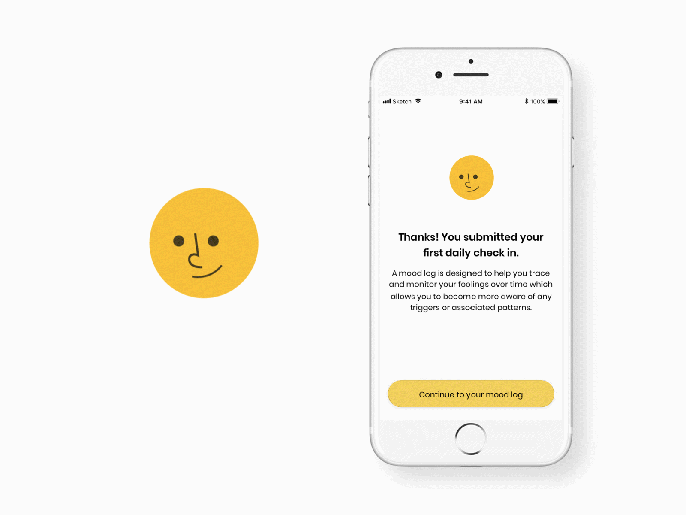

Myndr
Komodo Digital · Internship
Microinteractions and onboarding animation for a mental-health app.
Brief
During Komodo Digital's summer internship programme, I joined the team for a month while finishing my Interaction Design degree at Northumbria. It was my first sustained exposure to product delivery in a professional studio—working alongside researchers and designers on a live mobile app.
What I worked on
I worked on the Myndr mobile app near the end of its development cycle. I contributed iconography, small illustrations, and microinteractions—including button states, screen transitions, and onboarding animations. It was an early project where I had creative freedom on specific areas of the UI, and where I first learned to hand work over cleanly to a development team.
Myndr onboarding screens

Research and Ideation
I spent the first week understanding where the project stood—reviewing existing research, analysing Woody's screen designs, and starting my own research into the areas I would be working on.

Development
The second week focused on developing a visual style for representing emotions through simple facial features. We settled on a set of expressions that worked, then refined the character style so the icons would remain flexible across the app.


Initial Interactions
In the third week I moved into After Effects, starting with emoji states before shifting to onboarding animations—converting Woody's illustrations into shapes and animating them.

Final Animations
In the final week I continued in After Effects—success screens, transitions, and other UI elements—then prepared everything for handover as the internship ended.

Icon animations
Conclusion
Looking back, this was where I first understood what it meant to contribute to a team product rather than a student brief — remote during the pandemic, but still collaborative. It set the direction for the motion and interaction work I went on to do in later roles.
